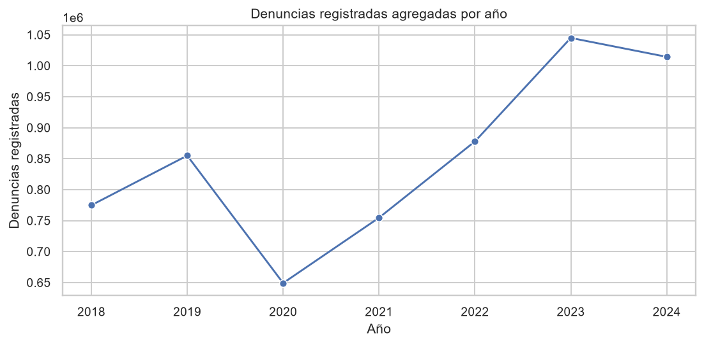
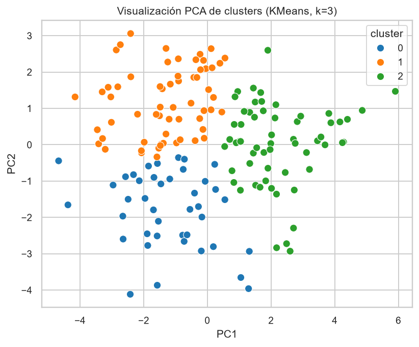
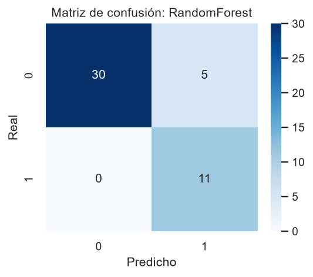
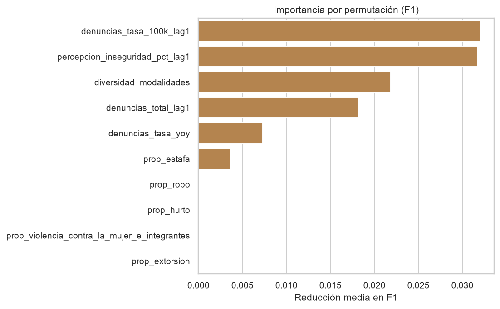

182
observaciones departamento-anio integradas
Proyecto reproducible con datos oficiales de denuncias policiales SIDPOL/MININTER, indicadores ENAPRES y poblacion INEI. El analisis distingue denuncias registradas, victimizacion, percepcion de inseguridad y confianza institucional.




Las denuncias policiales no equivalen a criminalidad real. Los resultados se interpretan como patrones agregados de seguridad ciudadana y no deben usarse para profiling individual ni decisiones automatizadas sobre personas o comunidades.